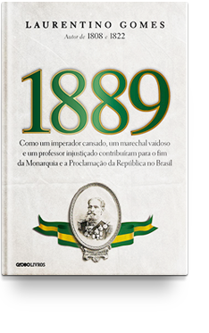

Leitura e seus benéficios

Criar amor pela leitura é um hábito obtido logo na infância. Incluir atividades com livros desde os primeiros anos de vida é uma das melhores formas de incentivar a leitura infantil e construir uma relação prazerosa e saudável com a literatura. Os benefícios dessa prática são incontáveis, mas como desenvolvê-la em um mundo altamente tecnológico e tomado por smartphones, computadores e videogames? Diante de toda a modernidade e dinamismo, é comum que as novas gerações busquem informações mais rápidas e acessíveis. Ler um livro nem sempre faz parte das prioridades, mas vocês, pais, responsáveis e educadores, não devem esquecer que a leitura é um importante hábito para aumentar o desempenho do aprendizado.
- Escrita e fala
Pessoas que leem mais possuem um vocabulário mais rico e maior, portanto, na hora de escrever e falar, conseguem organizar as palavras de uma forma mais fácil de ser compreendida.
- Benefícios Cerebrais
Pesquisas descobriram que as pessoas que mantêm seus cérebros ativos, lendo ou jogando jogos desafiadores mentalmente, como o xadrez, têm 2,5 vezes menos chances de desenvolver a doença de Alzheimer do que aquelas que passam seu tempo livre em atividades menos estimulantes. Estudos mostraram que permanecer mentalmente alerta pode retardar o progresso (ou possivelmente até prevenir) da doença de Alzheimer e a demência..
- Criatividade
A criatividade dos leitores são muito mais potentes se comparada a de pessoas que não possuem o hábito de ler. A leitura de histórias potencializa a criatividade na hora de ter novas ideias, resolver problemas e criar algo novo, em diversas áreas do conhecimento.
- Melhora o conhecimento geral
Se você quer ser um ser humano completo, capaz de manter uma conversa sobre uma variedade de tópicos, você precisa ser um leitor que vai além. E o seu material de leitura não precisa ser um assunto sério para você pegar algumas informações que podem ser úteis algum dia. Esteja variando! Nunca conhecerás uma pessoa que tem o hábito de ler que não é também uma pessoa interessante, mas eu encontrei um grande número de pessoas chatas que claramente nunca abrem um livro. Além disso, quanto mais conhecimento você tem, mais bem equipado está para lidar com muitos dos desafios da vida. O que me leva ao próximo ponto.
5 dicas de livros
A marca da vitória
O livro “A marca da vitória” conta a história de Phil Knight, fundador da Nike, uma história de empreendedorismo revigorante. Através de altos e baixos, ganhos e perdas, a equipe de Phil construiu uma das mais admiradas marcas do mundo. Phil deixa evidente no livro que era um jovem tímido e extremamente introvertido. Com um hábito excêntrico para época, Knight corria todos os dias, quilómetros a fio. Na faculdade de Oregon teve contato com o famoso treinador Bowerman, que adotou-o em sua equipe de corrida e atletismo. Nesse período Knight criou grande identificação e admiração pelo treinador Bowerman. A paixão de Bowerman transcendia à corrida; ele não só treinava, ele também costurava os tênis dos atletas. Essa experiência profunda no esporte e uma ligação pessoal tão significativa com o treinador, deu a Phil novas visões de mundo, amadurecendo-o.Formado em Oregon, Phil foi para o mestrado em Stanford, cursar negócios. Na conclusão do curso deu seus primeiros sinais no empreendedorismo, trazendo como defesa a criação de uma empresa de calçados, que funcionava por terceirização da produção para o Japão. Poucos se empolgaram com seu trabalho e ideia, exceto o professor que considerou o trabalho e defesa dignos de um A. Formado em ambas faculdades e de volta na casa dos pais, Phil tinha pela frente decisões difíceis a tomar; o que ele faria da vida. Em uma manhã serena e com encantador cheiro da floresta, Phil corria pela beira da estrada, quando teve um insight, precisava tocar sua “Ideia Maluca”.

A loja de tudo
A “Loja de tudo” de Brad Stone é uma viagem pela história da Amazon, dos seus altos e baixos e do impacto que ela causou em várias industrias. A Amazon revolucionou o comércio eletrônico, o mercado editorial e de tecnologia web. Com crescimento vertiginoso desde sua fundação, a empresa dominou concorrentes, fidelizou clientes e alcançou o mundo. A infância de Jeff foi emocionalmente intensa, Jackie sua mãe engravidou ainda na adolescência, casando-se cedo. O casamento foi complicado, seu marido era artista circense, vivia na estrada e o dinheiro quase nunca entrava. O tempo passou, a situação piorou e eles se separaram, Jackie voltou para casa dos pais com Jeff ainda muito novo. Algum tempo depois Jackie conheceu uma nova pessoa e casou-se. Embora casada e feliz com a nova vida, o ex-marido vinha causando algumas confusões e ela e o atual marido pediram para o ex que não atrapalhasse o desenvolvimento do menino, pouco tempo se passou e ele sumiu. Jeff cresceu saudável e ativo, na fase escolar sua mãe batalhou por uma vaga em uma escola experimental para super dotados e conseguiu colocá-lo lá, ele já era um destaque, mas faltava uma escola que desse condições para desenvolver seu talento e versatilidade.
1889
1889 – Como um imperador cansado, um marechal vaidoso e um professor injustiçado contribuíram para o fim da Monarquia e a Proclamação da República no Brasil é um livro de autoria do escritor e jornalista Laurentino Gomes.[1] É o último livro da trilogia sobre o Brasil do século XIX de Laurentino Gomes, iniciada com as obras 1808 e 1822, que contam o período de transição do Brasil da colônia para a república, começando com a transferência da corte portuguesa para o Brasil no ano de 1808, depois com a independência no ano de 1822 e, por fim, com a proclamação da república no ano de 1889.[2] O livro mostra momentos e passagens importantes na formação da república brasileira, cuja proclamação já era inevitável, principalmente depois que os militares, principal apoio da monarquia, se sentiram mal recompensados e desprestigiados pelo governo, além disso, crescia uma movimentação republicana entre os civis.[3] A obra também traz uma visão sobre os últimos dias do império brasileiro.[4] Uma excelente obra que contrasta com a versão simplificada dos livros de história, dando ampla atenção para o golpe militar que proclamou uma república ditatorial, corrupta, falida e retrógrada. O livro aborda de forma cronológica os últimos momentos da monarquia no Brasil, seus últimos grandes atos (em destaque a abolição da escravatura), a influência do positivismo de Comte no meio militar e na maçonaria, inúmeras personalidades que contribuíram para a queda do império e ajudaram a combater os conflitos que estavam espalhados por todo o canto do país e por fim os primeiros momentos de uma república que reflete muito o nosso Brasil de agora. A leitura é fácil e fluida, com linguagem simples mas muito informativo. O estudo minucioso que ampara o livro traz perspectivas de vários dos atores envolvidos no grande evento brasileiro de 1889.

Hábitos atômicos
Em Hábitos Atômicos, o autor mostra como as pequenas mudanças (ou hábitos atômicos) podem gerar grandes resultados. No seu exemplo, os pequenos hábitos são como juros compostos: multiplicam-se com o passar do tempo. Assim, melhorar 1% a cada dia gera uma significativa mudança até o fim da jornada. Ele cita exemplos claros e acessíveis, como economia de dinheiro e a leitura, para exemplificar o que quer dizer. Economizar R$ 250 em uma semana pode não parecer muito, mas em um mês esse valor se transformará em R$ 1.000 e, em um ano, serão R$ 12 mil. Ler 15 páginas no dia, por exemplo, pode parecer pouco. Mas se você fizer isso em uma semana, terá lido 105 páginas em sete dias, e 420 em um mês. Em Hábitos Atômicos, James Clear também fala muito sobre os sistemas usados para as mudanças de hábitos. Vencedores e perdedores têm o mesmo objetivo, diz ele. Mas o que os diferencia então? Os sistemas usados para alcançar seus objetivos. Enquanto os vencedores usam os sistemas certos, os perdedores usam os sistemas errados. Assim, suas limitações não são a complexidade de seu objetivo, mas a inadequação de seus sistemas. Por fim, James Clear desenvolveu o que chama de “As quatro leis da mudança de comportamento”. Elas são as regras para criar bons hábitos e destruir os ruins.

Por que nós dormimos
É algo que todo mundo faz, mas nem todos em quantidade suficiente e, quando isso acontece, todos os aspectos de nossas vidas são prejudicados. Isso também envolve alucinações vívidas e paralisia total do corpo. Todavia, torna você mais inteligente, capaz, saudável, energizado e, até mesmo, atraente: o sono. Se você já teve algum problema de sono, então, há uma boa chance de que já tenha visitado a seção de suplementos para dormir na farmácia perto de sua casa. Você sabe qual é a substância mais presente nesses suplementos? Melatonina. Mas, será que a melatonina realmente funciona? O autor sugere que você recorra à melatonina apenas se estiver viajando e experimentando um jet lag. Para entender o motivo dessa recomendação, é preciso compreender como funciona o sono. Você, provavelmente, já ouviu (ou leu) a respeito do “ritmo circadiano”. Basicamente, o seu ritmo circadiano é o seu nível de energia ou vigília ao longo do dia. Os ritmos circadianos são uma espécie de ciclo: a maioria das pessoas se sente acordada de manhã, passa por uma queda de disposição no início da tarde, se sentem bem acordadas no início da noite e, depois, bastante cansadas conforme se aproxima a sua hora de dormir. Pesquisas recentes aumentaram consideravelmente a nossa compreensão do ritmo circadiano.